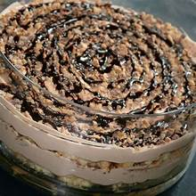

Back
Tiramisu Toffee

Description
This is a nice version of the popular Italian pick-me-up dessert. The toffee
candy in this recipe adds a delightful crunchiness to the smooth creamy whipped
cream quality of an already perfect dessert.
Ingredients
- 1(10.75 ounce) package frozen prepared pound cake,
thawed and cut into 9 slices
- 3/4 cup strong brewed coffee
- 1(8 ounce) package cream cheese
- 1 cup white sugar
- 1.2 cup chocolate syrup
- 2 cups heavy whipping cream
- 2(1.4 ounce) bars chocolate covered English toffee,
chopped
Steps
- Arrange cake slices on bottom of a rectangular 11x7 inch
baking dish, cutting cake slices if necessary to fit the bottom
of the dish. Drizzle coffee over cake
-
Beat cream cheese, sugar, and chocolate syrup, in a large bowl
with an electric mixer on medium speed until smooth. Add heavy
cream; beat on medium speed until light and fluffy. Spread over
cake. Sprinkle with chocolate-covered toffee candy
- Cover and refrigerate for at least 1 hour, but no longer than 24
hours, to set dessert and blend flavors